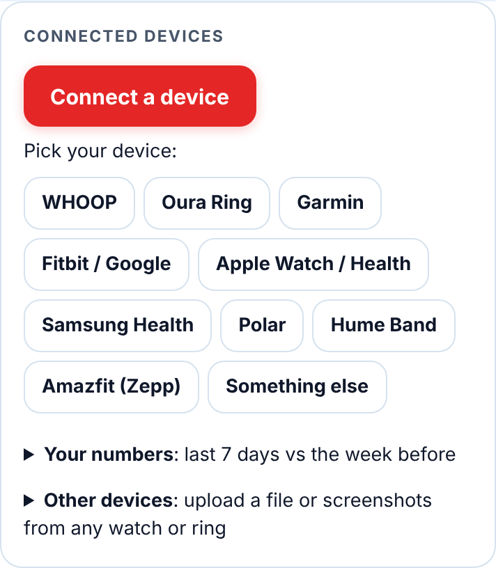
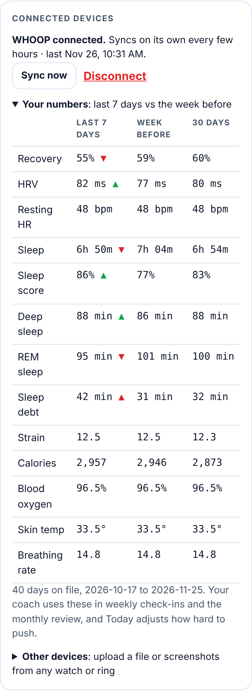
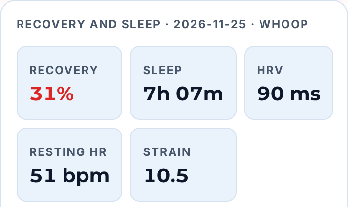

Fit 2 Compete is a training, meal and supplement coaching app for athletes and adults. Members connect WHOOP with OAuth (read only). Recovery, HRV, resting heart rate, sleep stages, sleep debt, strain, calories and steps sync automatically and adjust how hard each day's workout should be.

1. Body tab: Connect a device, then WHOOP. Starts the WHOOP OAuth sign-in.

2. Connected: syncs every few hours, Sync now and Disconnect (revokes and deletes tokens). Last 7 days vs. week before vs. 30 days.

3. Today tab: last night's recovery and sleep set the training advice for the day (for example, low recovery: hold the weight, cut a set).